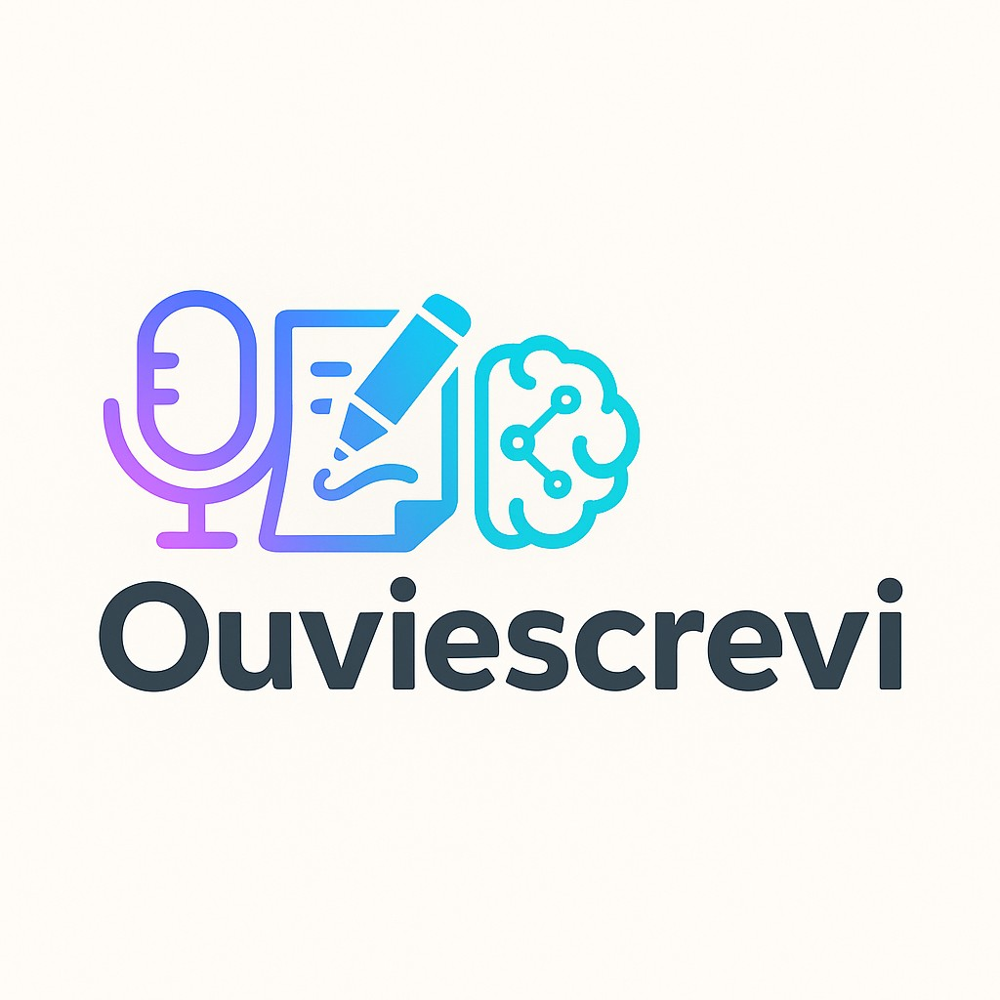

Novo logo Ouviescrevi
Proposta alinhada com a interface profissional: ícone geométrico (voz → texto) e wordmark limpo.
Logo horizontal — fundo claro
Ícone — fundo escuro
Ícone — 64×64 (app / redes)
Favicon — 32×32
Variante no header: ícone quadrado + nome em texto (comum em SaaS modernos).
Comparação rápida
Atual

(logo atual não disponível localmente)
Novo